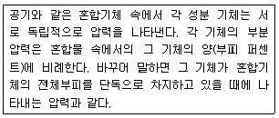
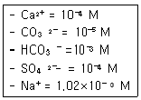
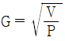
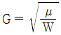
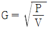
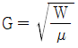
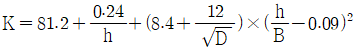
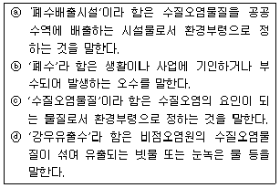

수질환경산업기사 (2009-05-10 기출문제)
1과목: 수질오염개론
1. 다음은 지하수의 수질특성에 대한 설명이다. 이중 잘못된 것은?
- 수온변동이 적고, 탁도가 낮다.
- 유속이 느리고 국지적인 환경조건의 영향이 적다.
- 알칼리도 및 경도가 지표수보다 높다.
- 세균에 의한 유기물 분해가 주된 생물작용이다.
(정답률: 알수없음)

2. 방사성 원소의 붕괴반응은 몇 차 반응의 대표적인 예라 할 수 있는가?
- 0차 반응
- 1차 반응
- 2차 반응
- 총괄 2차 반응
(정답률: 알수없음)
3. 순수한 물의 농도(mole/L)는?
- 18.6
- 36.6
- 48.6
- 55.6
(정답률: 알수없음)
4. 바닷물 중에는 0.⑤4 M 의 MgCl2가 포함되어 있다. 바닷물 250mL에는 몇 g의 MgCl2가 포함되어 있는가? (단, Mg 및 Cl의 원자량은 각각 24.3 및 35.5)
- 약 0.8g
- 약 1.3g
- 약 2.6g
- 약 3.8g
(정답률: 알수없음)
5. 다음 기체 중 Henry법칙에 가장 잘 적용되는 기체는?
- Cl2
- O2
- NH3
- HF
(정답률: 알수없음)
6. 수질오염에 관계되는 미생물과 그 경험적 분자식이 맞는 것은?
- Bacteria : C5H10O2N
- Algae : C7H12O2N
- Protozoa : C7H14O3N
- Fungi : C10H15O6N
(정답률: 알수없음)
7. 다음이 설명하고 있는 기체 법칙은?

- Dalton 의 부분 압력 법칙
- Henry의 부분 압력 법칙
- Avogadro의 부분 압력 법칙
- Boyle의 부분 압력 법칙
(정답률: 알수없음)
8. 유량이 1.2m3/s, BOD5 가 2.0mg/L, DO가 9.2mg/L인 하천에 유량 0.6m3/s, BOD5가 30mg/L, DO가 3.0mg/L인 하수가 유입되고 있다. 하천의 평균단면적은 8.1m2이면 하류 48km 지점의 용존산소 부족량은? (단, 수온은 20℃, 포화 DO 9.2mg/L, 혼합수의 K1 = 0.1/day, K2 = 0.2/day, 상용대수 기준)
- 3.2mg/L
- 4.7mg/L
- 5.2mg/L
- 6.7mg/L
(정답률: 알수없음)
9. 25℃, 2기압의 압력에 있는 메탄가스 10kg의 부피는? (단, 이상 기체 상수(R) : 0.082Lㆍatm/moLㆍK)
- 5.64×103 L
- 6.64×103 L
- 7.64×103 L
- 8.64×103 L
(정답률: 알수없음)
10. 다음 중 적조현상과 관계가 없는 것은?
- 해류의 정체
- 염분농도의 증가
- 수온의 상승
- 영양염류의 증가
(정답률: 알수없음)
11. [OH-]농도가 2.5×10-4M인 용액의 pH는?
- 10.2
- 10.4
- 10.6
- 10.8
(정답률: 알수없음)
12. 깊은 호수나 저수지의 수직방향의 물 운동이 없을 때 생기는 성층현상(成層現象)의 성층구분 순서로 맞는 것은? (단, 수표면으로부터)
- Epilimnion → Thermocline → Hypolimnion → 침전물층
- Epilimnion → Hypolimnion → Thermocline → 침전물층
- Hypolimnion → Thermocline → Epilimnion → 침전물층
- Hypolimnion → Epilimnion → Thermocline → 침전물층
(정답률: 알수없음)
13. 다음 농도의 이온을 포함하는 물의 이온강도는?

- 약 1.⑤×10-3
- 약 1.22×10-3
- 약 1.43×10-3
- 약 1.67×10-3
(정답률: 알수없음)
14. BOD가 20mg/L인 하수 100,000m3/day가 하천으로 유입 된다. 하천의 유량이 50m3/sec이고 하수 유입 전 하천의 BOD는 2mg/L 이다. 완전 혼합 후의 하천 BOD(mg/L)는?
- 2.4
- 2.8
- 3.2
- 3.6
(정답률: 알수없음)
15. 분뇨 처리 후 방류수 잔류염소를 3mg/L로 하고자 한다. 하루 방류수 유량이 800m3이고 염소요구량이 4mg/L이라면 염소는 하루에 얼마나 필요(주입)한가?
- 2.4kg/day
- 3.8kg/day
- 4.3kg/day
- 5.6kg/day
(정답률: 알수없음)
16. 20℃에서 DO 6mg/L인 물의 DO 포화도는 몇 %인가? (단, 대기의 화학적 조성 중 O2는 21%, 20℃에서 순수한 물의 공기 용해도는 28.4mL/L라고 가정한다.)
- 약 60%
- 약 66%
- 약 70%
- 약 76%
(정답률: 알수없음)
17. Glucose(C6H12O6) 360mg/L가 완전 산화하는데 필요한 이론적 산소요구량(ThOD)은?
- 346mg/L
- 362mg/L
- 384mg/L
- 396mg/L
(정답률: 알수없음)
18. 탈산소 계수(상용대수)가 0.2day-1이면, BOD2/BOD5 비는?
- 0.31
- 0.46
- 0.53
- 0.67
(정답률: 알수없음)
19. 미생물의 증식곡선의 단계로 맞는 것은?
- 대수기 - 유도기 - 정지기 - 사멸기
- 유도기 - 대수기 - 사멸기 - 정지기
- 대수기 - 유도기 - 사멸기 - 정지기
- 유도기 - 대수기 - 정지기 - 사멸기
(정답률: 알수없음)
20. 생물학적 질화 반응 중 아질산화에 관한 설명으로 틀린 것은?
- 관련 미생물 : 독립영양성 세균
- 알칼리도 : NH4+-N 산화에 알칼리도 필요
- 산소 : NH4+-N 산화에 O2 필요
- 증식속도 : g NH4+-N/g MLVSSㆍhr로 표시
(정답률: 알수없음)
2과목: 수질오염방지기술
21. 유량이 4,000m3/day인 폐수의 BOD와 SS의 농도가 각각 200mg/L 이라고 할 때 포기조의 체류시간을 6시간으로 하였다. 포기조내의 F/M비를 0.4로 하는 경우에 포기조내 MLSS 농도는?
- 1,600mg/L
- 1,800mg/L
- 2,000mg/L
- 2,200mg/L
(정답률: 알수없음)
22. 원추형 바닥을 가진 원형의 일차침전지의 직경이 40m, 측벽 깊이가 3m, 원추형 바닥의 깊이가 1m인 경우, 하수처리 유량은? (단, 침전지 체류시간 12시간)
- 약 6400m3/day
- 약 7400m3/day
- 약 8400m3/day
- 약 9400m3/day
(정답률: 알수없음)
23. 활성 슬러지 법에서 폭기조의 유효 용적이 800m3이고 MLSS 농도가 2400mg/L이다. 고형물 체류시간(SRT)이 6일 이라고 한다면 건조된 폐슬러지 생산량은?
- 260 kg/day
- 320 kg/day
- 430 kg/day
- 510 kg/day
(정답률: 알수없음)
24. 하수 소독방법인 UV의 장점으로 틀린 것은?
- 유량과 수질의 변동에 대해 적응력이 강하다.
- 과학적으로 증명된 정밀한 처리시스템이다.
- 접촉시간이 길며 잔류 효과가 있다.
- pH 변화에 관계없이 지속적 살균이 가능하다.
(정답률: 알수없음)
25. 생물학적 인 제거공법에서 호기성 공정의 주된 역할에 대하여 가장 잘 설명한 것은?
- 용해성 인 과잉 산화
- 용해성 인 과잉 방출
- 용해성 인 과잉 환원
- 용해성 인 과잉 흡수
(정답률: 알수없음)
26. 하수 슬러지의 농축 방법별 장단점으로 틀린 것은?
- 중력식 농축 : 잉여슬러지의 농축에 적합함
- 부상식 농축 : 약품 주입 없이도 운전 가능함
- 원심분리 농축 : 악취가 적음
- 중력벨트 농축 : 고농도로 농축 가능
(정답률: 알수없음)
27. 슬러지의 함수율 90%, 슬러지의 고형물량중 유기물 함량 70% 이다. 투입량은 100kL/일 이며 소화후 유기물의 5/7가 제거된다. 소화된 슬러지의 양은? (단, 소화슬러지의 함수율은 80%, %는 부피기준이며, 고형물의 비중은 1.0으로 가정한다.)
- 15m3
- 20m3
- 25m3
- 30m3
(정답률: 알수없음)
28. BOD5가 80mg/L인 하수가 완전혼합 활성슬러지공정으로 처리된다. 유출수의 BOD5가 10mg/L, 온도 20℃, 유입유량 40,000톤/일, MLVSS가 2,000mg/L, Y값 0.6 mgVSS/mgBOD5, Kd값 0.6 d-1, 미생물체류시간 10일이라면 Y 값과 Kd 값을 이용한 반응조의 부피 (m3)는? (단, 비중은 1.0 기준)
- 600m3
- 800m3
- 1000m3
- 1200m3
(정답률: 알수없음)
29. 피혁공장에서 BOD 400mg/L의 폐수가 500m3/day로 방류되고 이것을 활성슬러지법으로 처리하고자 한다. 하루에 유입유량의 5% (부피기준, 함수율 99%)에 해당되는 슬러지가 발생 된다고 보고 이때 슬러지를 4.5kg/m2-h(고형물기준)의 성능을 가진 진공여과기로 매일 8시간씩 탈수작업을 하여 처리하려면 여과기 면적은? (단, 슬러지 비중은 1.0으로 가정한다.)
- 약 13m2
- 약 10m2
- 약 7m2
- 약 4m2
(정답률: 알수없음)
30. 염소의 살균 능력에 관한 내용으로 틀린 것은?
- pH가 낮을수록 살균능력이 크다.
- 온도가 낮을수록 살균능력이 크다.
- HOCl은 OCl-보다 살균능력이 크다.
- 알칼리도가 낮을수록 살균능력이 크다.
(정답률: 알수없음)
31. BOD가 250mg/L인 하수를 1차 및 2차 처리로 BOD 30mg/L으로 유지하고자 한다. 2차 처리효율이 75%로 하면 1차 처리 효율은?
- 38%
- 42%
- 48%
- 52%
(정답률: 알수없음)
32. 활성슬러지법으로 폐수를 처리할 경우 포기조 혼합액의 MLSS농도가 3000mg/L이고 이 혼합액 1L를 Imhoff Cone에 30분간 정치했을 때 SV가 200mL이었다. 이 때 SVI 값은?
- 83
- 74
- 67
- 58
(정답률: 알수없음)
33. 연속 회분식 활성슬러지법의 특징으로 틀린 것은?
- 운전방식에 따라 사상균 벌킹을 방지할 수 있다.
- 배출공정에 포기가 없어 보통의 연속식 침전지에 비해 스컴의 잔류가능성이 낮다.
- 고부하형의 경우 다른 처리방식과 비교하여 적은 부지 면적에 시설을 건설할 수 있다.
- 활성슬러지 혼합액을 이상적인 정치상태에서 침전시켜 고액분리가 원활히 행해진다.
(정답률: 알수없음)
34. pH 5.7인 용액의 산도를 5배로 증가시킬 때 이 용액의 pH는?
- 5.2
- 5.0
- 4.8
- 4.6
(정답률: 알수없음)
35. 교반강도를 표시하는 속도구배(Velocity Gradient)를 정확하게 나타낸 식은? (단, μ: 점성계수, W : 단위용적당 동력, V : 응결지 부피, P : 동력)




(정답률: 알수없음)
36. 생물학적 질산화공정 중 단일 단계 질산화(부유 성장식)공정의 단점과 가장 거리가 먼 내용은?
- 독성물질에 대한 질산화 저해 방지 불가능
- 온도가 낮을 경우에는 반응조 용적이 매우 크게 소요
- BOD/TKN 비가 낮아 안정적인 MLSS 운영이 어려움
- 운전의 안정성은 미생물 반송을 위한 이차침전지의 운전에 좌우됨
(정답률: 알수없음)
37. NH4+가 미생물에 의해 NO3-로 산화될 때 pH의 변화는?
- 증가한다.
- 감소한다.
- 변화없다.
- 증가하다 감소한다.
(정답률: 알수없음)
38. 20℃의 물이 6.0m/hr의 여과속도로 균일한 모래상을 통하여 흐르고 있다. 모래입자는 직경이 0.4mm이고, 비중이 2.65 일 때 Reynolds 수는? (단, 20℃에서 ρW= 998.2kg/m3이고, μ=1.002×10-3 kg/mㆍsec 임)
- 0.42
- 0.66
- 1.10
- 1.76
(정답률: 알수없음)
39. 생물막 공법인 접촉산화법의 장점으로 틀린 것은?
- 분해속도가 낮은 기질제거에 효과적이다.
- 수온의 변동에 강하다.
- 난분해성물질 및 유해물질에 대한 내성이 높다.
- 슬러지 반송율이 낮아 유지관리가 용이하다.
(정답률: 알수없음)
40. BOD 1kg 제거에 필요한 산소량이 1kg 이다. 공기 1m3에 함유되어 있는 산소량이 0.277kg 이고 활성슬러지에서 공기용해율이 4%(부피%)라 할 때 BOD 1kg을 제거하는데 필요한 공기용량은? (단, 기타 조건은 고려하지 않음)
- 80m3
- 90m3
- 100m3
- 110m3
(정답률: 알수없음)
3과목: 수질오염공정시험방법
41. 가스크로마토그래피의 ECD 검출기로 선택적으로 검출되어지는 물질과 가장 거리가 먼 것은?
- 니트로 화합물
- 유기금속 화합물
- 유기할로겐 화합물
- 인 또는 황화합물
(정답률: 알수없음)
42. 염소이온의 질산은 적정법에서 종말점에 관한 설명으로 맞는 것은?
- 엷은 황갈색 침전이 나타날 때
- 엷은 적자색 침전이 나타날 때
- 엷은 적황색 침전이 나타날 때
- 엷은 청록색 침전이 나타날 때
(정답률: 알수없음)
43. 다음에 표시된 농도 중 가장 낮은 것은? (단, 용액의 비중은 모두 1.0 이다.)
- 180ppb
- 18μg/mL
- 18mg/L
- 1.8ppm
(정답률: 알수없음)
44. 원자흡광광도법의 시료원자화 장치 중 불꽃에 대한 설명으로 맞는 것은?
- 아세틸렌-공기 불꽃 : 불꽃 중에서 해리하기 어려운 내화성산화물을 만들기 쉬운 원소의 분석에 적당
- 프로판-공기 불꽃 : 불꽃 온도가 높고 거의 대부분의 원소 분석에 유효하게 사용
- 수소-공기 불꽃 : 원자외 영역에서의 불꽃 자체에 의한 흡수가 적기 때문에 이 파장영역에서 분석선을 갖는 원소의 분석에 적당
- 아세틸렌-아산화질소 불꽃 : 불꽃온도가 낮고 일부 원소에 대하여 높은 감도
(정답률: 알수없음)
45. 시료의 보존방법 중 4℃ 보관, NaOH로 pH 12 이상으로 보존(잔류염소가 공존할 경우 아스코르빈산 1g/L 첨가)해야 하는 측정항목은?
- 페놀류
- 총질소
- 유기인
- 시안
(정답률: 알수없음)
46. 다음 중 총 질소의 측정방법으로 사용하지 않는 것은?
- 염화제일주석 환원법
- 카드뮴 환원법
- 환원증류-킬달법(합산법)
- 흡광광도법
(정답률: 알수없음)
47. 폐수의 화학적 산소요구량의 측정에 있어서 화학적 산소요구량이 200mg/L라고 추정된다. 이때 0.025N KMnO4 용액의 소비량은 5.2mL이고 공시험치는 0.2mL이다. 시료 몇 mL를 사용해서 시험하는 것이 적절한가? (단, 산성 100℃에서 과망간산칼륨에 의한 화학적 산소요구량, f = 1)
- 약 35
- 약 25
- 약 15
- 약 5
(정답률: 알수없음)
48. 시료의 전처리에서 유기물 함량이 비교적 높지 않고 금속의 수산화물, 산화물, 인산염 및 황화물을 함유하고 있는 시료의 전처리방법은?
- 질산에 의한 분해법
- 질산-염산에 의한 분해법
- 질산-황산에 의한 분해법
- 질산-과염소산에 의한 분해법
(정답률: 알수없음)
49. 식물성 플랑크톤(조류)의 정량시험법에 관한 내용으로 맞는 것은?
- 저배율 방법은 100배율 이하를 말한다.
- 중배율 방법은 100배율~1000배율 이하를 말한다.
- 저배율 방법에는 스트립 이용 계수 방법과 혈구계수기 이용 방법이 있다.
- 팔머-말로니 챔버 이용 계수 방법은 중배율 방법이다.
(정답률: 알수없음)
50. 수로 및 직각 3각 위어판을 만들어 유량산출할 때 위어의 수두 0.2m, 수로의 밑면에서 절단 하부점까지의 높이 0.75m, 수로의 폭 0.5m일 때의 위어의 유량은? (단,

이다.)- 0.4m3/min
- 0.8m3/min
- 1.2m3/min
- 1.5m3/min
(정답률: 알수없음)
51. 수질오염공정시험기준상의 색도 시험방법에 관한 설명으로 틀린것은?
- 투과율법을 사용하여 색도를 측정한다.
- 색도의 측정은 시각적으로 눈에 보이는 색상을 기준으로 색도차를 계산한다.
- 백금-코발트 표준물질과 아주 다른 색상의 폐하수에서 뿐만 아니라 표준 물질과 비슷한 색상의 폐하수에서도 적용할 수 있다.
- 시료중의 부유물질은 제거하여야 한다.
(정답률: 알수없음)
52. 어떤 폐수의 부유물질(SS)을 분석한 결과 다음과 같았다. 부유물질(SS)은 몇 mg/L 인가? (단, 시료의 용량 : 200mL, 여지의 무게 : 1.7856g, 여지와 건조고형물 무게 : 1.8623g)
- 251mg/L
- 384mg/L
- 493mg/L
- 567mg/L
(정답률: 알수없음)
53. 채취된 시료의 최대 보존 기간이 가장 짧은 측정항목은?
- 부유물질
- 용존총질소
- 페놀류
- 색도
(정답률: 알수없음)
54. 흡광광도계의 근적외부의 광원으로 주로 사용되는 것은?
- 텅스텐램프
- 열음극관
- 중수소방전관
- 중공음극램프
(정답률: 알수없음)
55. 흡광광도법에 의한 크롬 정량에 관한 설명으로 맞는 것은?
- 정량범위는 조건에 따라 다르나 0.2~5mg/L 범위이다.
- 디페닐카르바지드를 작용시켜 생성하는 청색 착화물의 흡광도를 측정한다.
- 공기-아세틸렌 가스는 철, 니켈의 방해가 적다.
- 과망간산칼륨으로 크롬이온 전체를 6가크롬으로 산화시킨다.
(정답률: 알수없음)
56. 유도결합플라즈마 발광 광도 분석장치에 관한 설명으로 틀린 것은?
- 시료주입부 : 분무기 및 챔버로 이루어져 있음
- 고주파 전원부 : 고주파 전원은 수정발전식의 27.13MHz로 10~30kW의 출력임
- 분광부 및 측광부 : 분광기는 기능에 따라 단색화분광기, 다색화 분광기로 구분됨
- 분광부 및 측광부 : 플라스마광원으로부터 발광하는 스펙트럼선을 선택적으로 분리하기 위해서는 분해능이 우수한 회절격자가 많이 사용됨
(정답률: 알수없음)
57. 수질오염공정시험기준상 온도에 대한 내용으로 틀린 것은?
- 냉수는 4℃ 이하
- 상온은 15~25℃
- 온수는 60~70℃
- 찬 곳은 따로 규정이 없는 한 0~15℃
(정답률: 알수없음)
58. 수심 3m, 폭 7m인 장방형 개수로에 평균유속 2.0m/sec로 페수를 흘려보낼 때 이 폐수의 유량은?
- 520m3/분
- 1520m3/분
- 2520m3/분
- 3520m3/분
(정답률: 알수없음)
59. 페놀류의 함량측정시 일반적으로 쓰이는 4-아미노안티피린을 발색제로 하는 흡광광도법에 관한 설명 중 틀린 것은?
- 증류한 시료에 염화암모늄-암모니아 완충액을 넣어 pH 10으로 조절한다.
- 적색의 안티피린계 색소의 흡광도를 측정할 때 수용액에서는 510nm에서 측정한다.
- 적색의 안티피린계 색소의 흡광도를 측정할 때 클로로포름용액에서는 560nm에서 측정한다.
- 시험방법으로는 추출법과 직접법으로 나눌 수 있다.
(정답률: 알수없음)
60. 0.025N KMnO4 수용액 2,000mL를 조제하려면 KMnO4 몇 g이 필요한가? (단, KMnO4의 분자량은 158 이다.)
- 1.23g
- 1.58g
- 1.87g
- 1.95g
(정답률: 알수없음)
4과목: 수질환경관계법규
61. 낚시금지구역 안에서 낚시행위를 한 자에 대한 과태료 처분 기준은?
- 100만원 이하
- 200만원 이하
- 300만원 이하
- 500만원 이하
(정답률: 알수없음)
62. 수질 및 수생태계 환경기준 중 호소의 생활환경 기준 III(보통)등급 기준으로 맞는 것은?
- 화학적 산소요구량 : 3mg/L 이하
- 총질소 : 0.3mg/L 이하
- 총인 : 0.1mg/L 이하
- 용존산소량 : 5.0mg/L 이상
(정답률: 알수없음)
63. 환경부 장관이 설치, 운영하는 측정망과 가장 거리가 먼 것은?
- 퇴적물 측정망
- 생물 측정망
- 공공수역 유해물질 측정망
- 기타오염원에서 배출되는 오염물질 측정망
(정답률: 알수없음)
64. 초과부과금 산정기준에서 3종 사업장의 위반횟수별 부과계수로 맞는 것은? (단, 폐수무방류배출시설 제외)
- 처음 위반의 경우 1.8
- 처음 위반의 경우 1.6
- 처음 위반의 경우 1.5
- 처음 위반의 경우 1.3
(정답률: 알수없음)
65. 폐수 배출규모에 따른 사업장 종별 기준으로 맞는 것은?
- 1일 폐수 배출량 2000m3 이상 - 1종 사업장
- 1일 폐수 배출량 1000m3 이상 - 2종 사업장
- 1일 폐수 배출량 500m3 이상 - 3종 사업장
- 1일 폐수 배출량 100m3 이상 - 4종 사업장
(정답률: 알수없음)
66. 환경기술인의 교육기관으로 맞는 것은?
- 환경관리공단
- 환경보전협회
- 국립환경인력개발원
- 환경기술연수원
(정답률: 알수없음)
67. 폐수종말처리시설의 방류수 수질기준(mg/L)중 BOD, COD, T-N 각각의 농도 기준으로 맞는 것은? (단, 현재 적용하는 기준, 농공단지 제외)
- 20이하, 40이하, 60이하
- 30이하, 40이하, 40이하
- 20이하, 40이하, 40이하
- 30이하, 50이하, 60이하
(정답률: 알수없음)
68. 수질오염경보에 관한 내용으로 측정항목별 측정값이 관심단계 이하로 낮아진 경우의 수질오염감시경보단계로 맞는 것은?
- 경계
- 주의
- 해제
- 관찰
(정답률: 알수없음)
69. 수질 및 수생태계 환경기준(하천) 중 생활환경 기준의 기준치로 맞는 것은? (단, 등급은 '좋음(Ib)')
- 부유물질량 : 10mg/L 이하
- BOD : 2mg/L 이하
- COD : 3mg/L 이하
- T-N : 20mg/L 이하
(정답률: 알수없음)
70. 수질오염방지시설중 화학적 처리시설이 아닌 것은?
- 살균시설
- 폭기시설
- 이온교환시설
- 침전물 개량시설
(정답률: 알수없음)
71. 초과배출부과금 부과대상이 되는 수질오염물질이 아닌 것은?
- 디클로로메탄
- 폴리염화비페닐
- 테트라클로로에틸렌
- 페놀류
(정답률: 알수없음)
72. 수질 및 수생태계 정책 심의 위원회의 심의 사항과 가장 거리가 먼 것은?
- 수질 및 수생태계 보전을 위한 장, 단기 정책 방향에 관한 사항
- 수질 및 수생태계 관리체계에 관한 사항
- 수질 및 수생태계 보전을 위한 공공시설 제한에 관한 사항
- 수질 및 수생태계와 관련된 측정, 조사에 관한 사항
(정답률: 알수없음)
73. 다음은 수질 및 수생태계 보전에 관한 법률에서 사용되는 용어의 정의이다. 적절한 것으로만 짝지어진 것은?

- ⓐ-ⓓ
- ⓐ-ⓒ
- ⓑ-ⓒ
- ⓒ-ⓓ
(정답률: 알수없음)
74. 폐수 무방류 배출시설의 운영기록은 최종 기재한 날부터 얼마 동안 보존하여야 하는가?
- 1년간
- 2년간
- 3년간
- 5년간
(정답률: 알수없음)
75. 공공수역 중 환경부령으로 정하는 수로가 아닌 것은?
- 운하
- 농업용수로
- 상수관로
- 지하수로
(정답률: 알수없음)
76. 기타 수질오염원의 시설구분-대상-규모 기준으로 틀린 것은?
- 농축수산물, 단순가공시설-조류의 알을 물세척만 하는 시설-물사용량이 1일 5세제곱미터 이상일 것
- 농축수산물, 단순가공시설-1차 농산물을 물세척만 하는 시설-물사용량이 1일 5세제곱미터 이상일 것
- 운수장비 정비 또는 폐차장 시설-자동차 폐차장 시설-면적이 1천 500제곱미터 이상일 것
- 사진 처리시설-무인 자동식 현상, 인화, 정착시설-폐수발생량 1일 0.01세제곱미터 이상일 것
(정답률: 알수없음)
77. 위임업무 보고사항 중 '배출부과금 징수실적 및 체납처분 현황'에 대한 보고횟수 기준으로 맞는 것은?
- 수시
- 연 4회
- 연 2회
- 연 1회
(정답률: 알수없음)
78. 1종 사업장 1개와 3종 사업장 1개를 운영하는 오염할당사업자가 각각 조업정지 10일씩을 갈음하여 납부하여야 하는 과징금의 총액은?
- 4,500만원
- 6,000만원
- 8,500만원
- 9,000만원
(정답률: 알수없음)
79. 대권역 게획에 포함되어야 하는 사항과 가장 거리가 먼 것은?
- 상수원 및 물 이용현황
- 수질오염 예방 및 저감대책
- 재원조달 및 집행계획
- 점오염원, 비점오염원 및 기타 수질오염원에 의한 수질오염물질 발생량
(정답률: 알수없음)
80. 폐수배출시설의 설치허가 대상시설 범위 기준으로 맞는 것은?
- 상수원보호구역이 지정되지 아니한 지역 중 상수원취수시설이 있는 지역의 경우에는 취수시설로부터 하류로 유하거리 10킬로미터 이내에 설치하는 배출시설
- 상수원보호구역이 지정되지 아니한 지역 중 상수원취수시설이 있는 지역의 경우에는 취수시설로부터 하류로 유하거리 15킬로미터 이내에 설치하는 배출시설
- 상수원보호구역이 지정되지 아니한 지역 중 상수원취수시설이 있는 지역의 경우에는 취수시설로부터 상류로 유하거리 10킬로미터 이내에 설치하는 배출시설
- 상수원보호구역이 지정되지 아니한 지역 중 상수원취수시설이 있는 지역의 경우에는 취수시설로부터 상류로 유하거리 15킬로미터 이내에 설치하는 배출시설
(정답률: 알수없음)